Part 10: Steady Current
1. Current Continuity Equation
Equation:
$$ \oint \vec{j} \cdot d\vec{S} = -\frac{dq}{dt} $$Steady condition:
$$ \oint \vec{j} \cdot d\vec{S} = -\frac{dq}{dt} = 0 $$2. Ohm's Law
$$ U = I R $$Since $\Delta I = j \Delta S, \Delta U = R \Delta I, \Delta U = E \Delta l, R = \rho \frac{\Delta l}{\Delta S}$:
$$ \therefore j = \frac{\Delta I}{\Delta S} = \frac{\Delta U / R}{\Delta S} = \frac{E \Delta l / (\rho \frac{\Delta l}{\Delta S})}{\Delta S} = \frac{E}{\rho} = \sigma E $$Written in vector form: $\vec{j} = \sigma \vec{E}$
Substituting into Gauss's Law: $\frac{1}{\sigma} \oint \vec{j} \cdot d\vec{S} = \frac{q}{\varepsilon}$
$$ \therefore -\frac{dq}{dt} = \frac{\sigma}{\varepsilon} q \implies q = q_0 e^{-\frac{\sigma}{\varepsilon}t} $$This represents the process of establishing a steady current in a circuit.
3. Ohm's Law for Full Circuit and Joule's Law
① For a pure resistance circuit (all electrical energy is converted to heat):
Electromotive force of the power source: $\mathcal{E} = I R + I r$
Where the terminal voltage $U = I R = \mathcal{E} - I r = -r \cdot I + \mathcal{E}$ is a linear function of $I$.
- Total power of the source: $P_{\text{total}} = \mathcal{E} I = I^2 R + I^2 r$
- Internal power: $P_{\text{in}} = I^2 r$
- Output power: $P_{\text{out}} = I^2 R$
<1> $P_{\text{out}} = I^2 R = (\mathcal{E} - I r) I = -r I^2 + \mathcal{E} I = -r\left(I - \frac{\mathcal{E}}{2r}\right)^2 + \frac{\mathcal{E}^2}{4r}$
When $I = \frac{\mathcal{E}}{2r}$, $P_{\max} = \frac{\mathcal{E}^2}{4r}$.
<2> $P_{\text{out}} = I^2 R = \left(\frac{\mathcal{E}}{R+r}\right)^2 R = \frac{\mathcal{E}^2}{\frac{(R-r)^2}{R} + 4r} \le \frac{\mathcal{E}^2}{4r}$
Maximum occurs when $R = r$.
<3> $P_{\text{out}} = U I = U \frac{\mathcal{E}-U}{r} = -\frac{1}{r} U^2 + \frac{\mathcal{E}}{r} U = -\frac{1}{r}\left(U - \frac{\mathcal{E}}{2}\right)^2 + \frac{\mathcal{E}^2}{4r}$
When $U = \frac{\mathcal{E}}{2}$, $P_{\max} = \frac{\mathcal{E}^2}{4r}$.
② Microscopic explanation of current:
$$ \vec{v}_i = \vec{v}_{0i} + \frac{q\vec{E}}{m} t_i, \quad \text{and} \quad \vec{j} = n e \bar{v}_i \implies \vec{j} = n e \bar{v}_{0i} + \frac{n e^2 \vec{E}}{m} \bar{t}_i $$Because $\vec{v}_{0i}$ is the initial velocity in all directions due to the thermal motion of the electron, $n \bar{v}_{0i} = 0$.
Let the average free flight time of the electron be $\tau = \frac{\sum t_i n_i}{n}$:
$$ \therefore \vec{j} = \frac{n e^2 \tau}{m} \vec{E} \implies \sigma = \frac{n e^2 \tau}{m} $$Also, because $\vec{v}_i = \vec{v}_{0i} + \frac{e\vec{E}}{m} t_i$
$$ \therefore \frac{1}{2} m v_i^2 = \frac{e^2 E^2}{2m} t_i^2 + \frac{1}{2} m v_{0i}^2 + \frac{e t_i}{m} \vec{v}_{0i} \cdot \vec{E} $$Averaging over a large number of electrons:
$$ \frac{1}{2} m \bar{v}_i^2 = \frac{1}{2} m \bar{v}_{0i}^2 + \frac{e^2 E^2}{2m} \bar{t}_i^2 $$ $$ \therefore \Delta E_k = \frac{1}{2} m \bar{v}_i^2 - \frac{1}{2} m \bar{v}_{0i}^2 = \frac{e^2 E^2}{2m} \bar{t}_i^2 $$And because $\bar{t}_i^2 = 2 \tau^2$ (for exponential distribution of flight times):
$$ \therefore \text{Thermal power density per unit volume } p = \frac{n \Delta \overline{E_k}}{\tau} = \frac{n e^2 \tau}{m} E^2 = \sigma E^2 $$ $$ \therefore \text{Thermal power } P = p \cdot V = \sigma E^2 l S = \frac{E^2 l^2}{\rho l / S} = \frac{U^2}{R} = I^2 R $$Therefore, work done by the current:
- Total work: $W = q U = U I t$ (If it's a pure resistance circuit, $W = Q \implies U = I R$)
- Heat generated: $Q = P t = I^2 R t$ (If it's a non-pure resistance circuit, $W' = U I t - I^2 R t$)
4. Boundary Conditions
① Boundary conditions of the electric field:

② Boundary conditions of current density:

5. Solving Complex Circuits
① Kirchhoff's Current Law (KCL):
For a node: $\sum I_i = 0$ (The node can be a region; current flowing in is positive, flowing out is negative, or vice versa).
(Theoretical basis: Steady condition $\oint \vec{j} \cdot d\vec{S} = -\frac{dq}{dt} = 0$.)
② Kirchhoff's Voltage Law (KVL):
For a segment: $\sum U_i = \varphi_a - \varphi_b = \sum \mathcal{E}_i + \sum I_i R_i$
(Potential drop is positive, rise is negative, or vice versa; on resistors, current direction is the potential drop direction; on voltage sources, from positive pole to negative pole, etc.)
For a loop: $\sum U_i = 0$
(Theoretical basis: $U_{ab} = \varphi_a - \varphi_b = \int_a^b \vec{E} \cdot d\vec{l}$, and $\oint \vec{E} \cdot d\vec{l} = 0$.)
③ Thevenin's Theorem:

④ Norton's Theorem:

⑤ Superposition Principle:
The current through any branch of a circuit is equal to the algebraic sum of the currents produced in that branch by each power source acting independently (with the other power sources replaced by their internal resistances).
(Theoretical basis: $I = \vec{j} \cdot \vec{S} = \sigma \vec{E} \cdot \vec{S} = \sigma (\sum \vec{E}_i) \cdot \vec{S} = \sum (\sigma \vec{E}_i \cdot \vec{S}) = \sum I_i$.)
6. Modifying Ammeters
① Ammeter (A):

② Voltmeter (V):
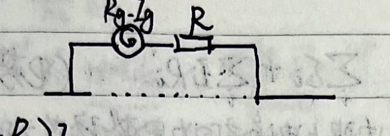
③ Ohmmeter:
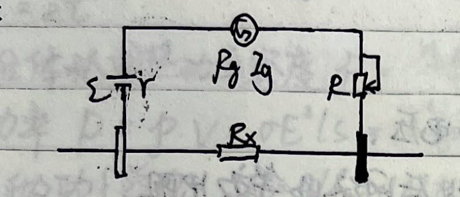
$$ I_{\text{meas}} = \frac{\mathcal{E}}{r + R_g + R + R_x} \implies R_x = \frac{\mathcal{E}}{I_{\text{meas}}} - R - R_g - r $$Because the ammeter scale is uniform:
- Ammeter and voltmeter scales are uniform.
- Ohmmeter scale is not uniform.
7. Measuring Resistance and Internal Resistance
① Voltammetry (Voltmeter-Ammeter Method):
1) Ammeter external connection:
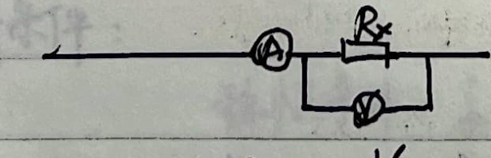
2) Ammeter internal connection:
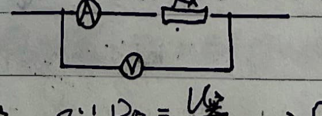
3) Choosing the connection method:
Let the error of both methods be equal: $\frac{R_x^2}{R_x + R_V} = R_A$.
Dividing by $R_x R_V$ gives $\frac{R_x}{R_V} = \frac{R_A}{R_x} + \frac{R_A}{R_V}$. Since $R_A \ll R_V$, then $\frac{R_x}{R_V} \approx \frac{R_A}{R_x} \implies R_x^2 \approx R_A R_V$.
- When $R_x > \sqrt{R_A R_V}$, use internal connection, making the ammeter's voltage division relatively small.
- When $R_x < \sqrt{R_A R_V}$, use external connection, making the voltmeter's current division relatively small.
When $R_x$ is unknown:
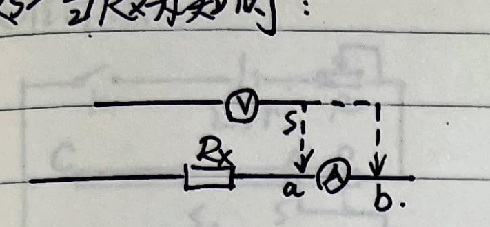
② Ohmmeter Method:
$$ R_{\text{meas}} = \frac{\mathcal{E}}{I_{\text{meas}}} - R - R_g - r $$ $$ \begin{cases} \text{When } I_{\text{meas}} \to 0, \quad R_{\text{meas}} \to \infty \\ \text{When } I_{\text{meas}} = \frac{\mathcal{E}}{R+R_g+r}, \quad R_{\text{meas}} = 0 \end{cases} $$ $$ \therefore R_{\text{mid}} = \frac{\mathcal{E}}{I_{\text{max}}/2} - R - R_g - r = R + R_g + r $$ $$ \therefore R_{\text{meas}} = \frac{\mathcal{E}}{I_{\text{meas}}} - R_{\text{mid}} $$$R_{\text{mid}}$ is the resistance value at the median scale of the ohmmeter, which can be read directly.
③ Bridge Method:
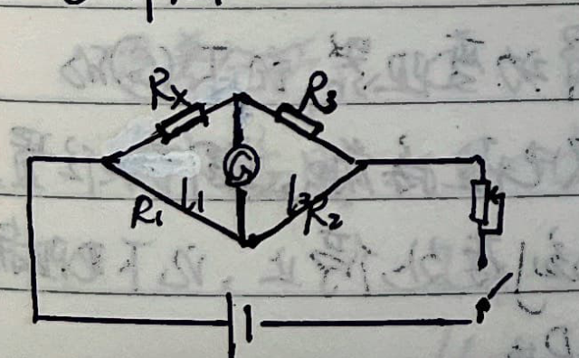
④ Half-deflection method to measure ammeter internal resistance:
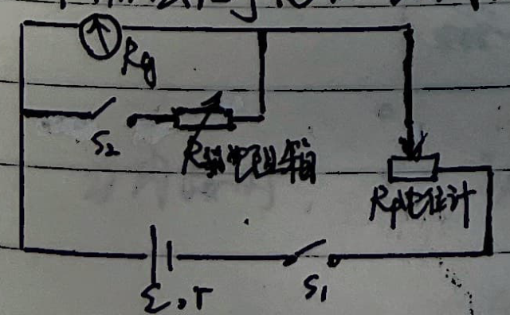
Error Analysis:
$$ \begin{cases} I_g R_g + I_g (R_P + r) = \mathcal{E} \\ \frac{1}{2} I_g R_g + \left(\frac{1}{2} I_g + I'\right) (R_P + r) = \mathcal{E} \end{cases} $$ $$ \text{and} \quad \frac{1}{2} I_g R_g = I' R_{\text{box}} $$ $$ \therefore \frac{\mathcal{E} - I_g R_g}{\mathcal{E} - \frac{1}{2} I_g R_g} = \frac{I_g}{\frac{1}{2} I_g + I'} = \frac{I_g}{\frac{1}{2} I_g + \frac{R_g}{2R_{\text{box}}} I_g} = \frac{2}{1 + \frac{R_g}{R_{\text{box}}}} $$ $$ \therefore \frac{R_g}{R_{\text{box}}} = \frac{\mathcal{E}}{\mathcal{E} - I_g R_g} $$This shows the relative error.
⑤ Substitution Method:
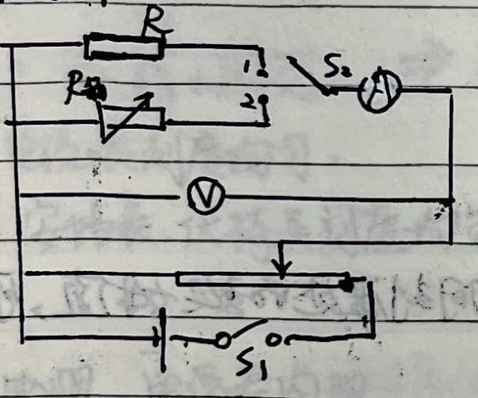
⑥ Wheatstone bridge to measure microammeter internal resistance:
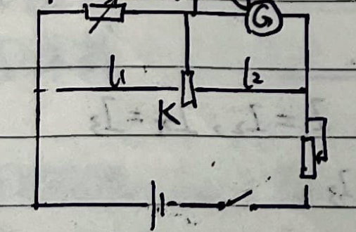
8. Measuring Electromotive Force (EMF)
① Voltmeter Method:
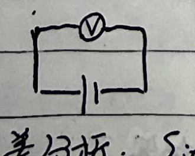
② Potentiometer Method:
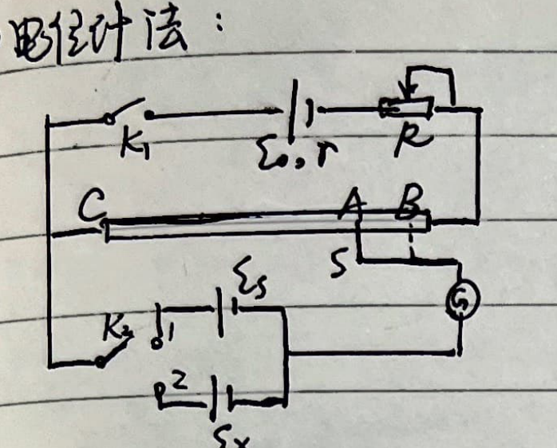
Close $K_1$, and close $K_2$ to position 1. Adjust $S$ to $A$, and adjust $R$ so the current through $\mathcal{E}_S$ is 0.
$$ \therefore I = \frac{\mathcal{E}_0}{R_{AC} + R + r} $$ $$ \therefore \mathcal{E}_S = I R_{AC} = \frac{\mathcal{E}_0 R_{AC}}{R_{AC} + R + r} $$Close $K_2$ to position 2, move the contact to $B$ so the current through $\mathcal{E}_x$ is 0.
$$ \therefore I' = \frac{\mathcal{E}_0}{R_{BC} + R + r} $$ $$ \therefore \mathcal{E}_x = I' R_{BC} = \frac{\mathcal{E}_0 R_{BC}}{R_{BC} + R + r} $$ $$ \therefore \mathcal{E}_x = \frac{R_{BC}}{R_{AC}} \mathcal{E}_S = \frac{BC}{AC} \mathcal{E}_S $$③ U-I Graph Method:
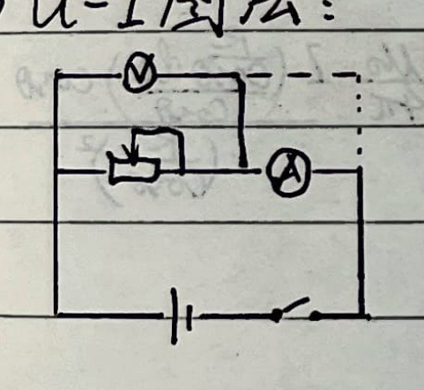
Error Analysis:
1) External connection:
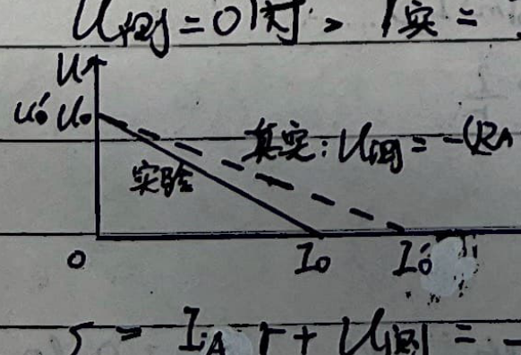
2) Internal connection:
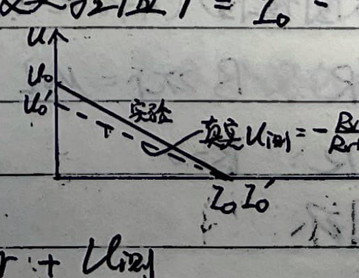
Special Topic: High School Physics Experiments (Circuits)
Experiment 7: Determine the Resistivity of a Metal (and Practice Using a Micrometer)
Experiment Objective: Practice using a micrometer; learn to use the Voltammetry method to measure resistance; determine the resistivity of a metal.
Experiment Principle: According to the resistance formula $R = \rho \frac{L}{S}$, measure the length $L$ and diameter $d$ of the wire to calculate the cross-sectional area $S$. Measure the resistance $R$ using the Voltammetry method to find the resistivity $\rho$ of the metal wire.
Procedure:
- Use the micrometer to measure the diameter $d$ at 3 different positions, calculate the average $\bar{d}$, and then calculate the cross-sectional area $S = \pi \left(\frac{\bar{d}}{2}\right)^2$.
- Connect the experimental circuit. Use a millimeter ruler to measure the effective length $L$ of the wire in the circuit three times and calculate the average $\bar{L}$.
- Change the sliding rheostat's slider position, record the values of voltage $U$ and current $I$ for multiple groups, and calculate the average resistance $\bar{R}$.
- Substitute the averages into the formula to get the resistivity:
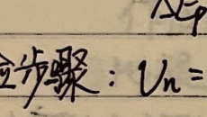
(Note: External ammeter connection method is used because the metal wire resistance is typically small)
Experiment 9: Practice Using a Multimeter
Precautions:
- Before use, observe whether the pointer points to the zero scale of the ammeter. If not, use a screwdriver to adjust the mechanical zero-adjust screw on the dial to zero.
- Measuring resistance: Disconnect the measured resistance from other components and the power supply. Do not touch the metal shafts of the test leads with your hands.
- When switching to a different Ohms range, you must re-zero the Ohms adjustment.
- After finishing measurements, unplug the test leads, and set the switch to the "highest AC voltage range" or "OFF" position. If not used for a long time, remove the battery.
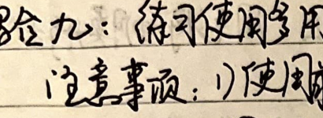
Experiment 15: Simple Use of Sensors
A sensor's general workflow transforms a non-electrical physical quantity into an electrical quantity:
Non-electrical physical quantity $\to$ Sensitive element $\to$ Conversion device $\to$ Conversion circuit $\to$ Electrical quantity
Common quantities measured:
- Length: length, width, height, displacement, angle, geometric position.
- Mechanics: force, torque, acceleration, mass, vibration.
- Temperature: temperature, moisture.
- Frequency: frequency, time.
- Electricity: resistance, voltage, current, capacitance, inductance.
- Magnetism: magnetic field, magnetic flux.
- Optics: brightness, color, transparency.
- Acoustics: sound pressure, noise.